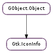

| static | new_for_pixbuf(icon_theme, pixbuf) |
| get_attach_points() | |
| get_base_scale() | |
| get_base_size() | |
| get_builtin_pixbuf() | |
| get_display_name() | |
| get_embedded_rect() | |
| get_filename() | |
| load_icon() | |
| load_icon_async(cancellable, callback, *user_data) | |
| load_icon_finish(res) | |
| load_surface(for_window) | |
| load_symbolic(fg, success_color, warning_color, error_color) | |
| load_symbolic_async(fg, success_color, warning_color, error_color, cancellable, callback, *user_data) | |
| load_symbolic_finish(res) | |
| load_symbolic_for_context(context) | |
| load_symbolic_for_context_async(context, cancellable, callback, *user_data) | |
| load_symbolic_for_context_finish(res) | |
| load_symbolic_for_style(style, state) | |
| set_raw_coordinates(raw_coordinates) |
None
None
Bases: GObject.Object
Contains information found when looking up an icon in an icon theme.
| Parameters: |
|
|---|---|
| Returns: | |
| Return type: |
Creates a Gtk.IconInfo for a GdkPixbuf.Pixbuf.
| Returns: | True if there are any attach points for the icon. |
|---|---|
| Return type: | bool, points: [Gdk.Point] |
Fetches the set of attach points for an icon. An attach point is a location in the icon that can be used as anchor points for attaching emblems or overlays to the icon.
| Returns: | the base scale. |
|---|---|
| Return type: | int |
Gets the base scale for the icon. The base scale is a scale for the icon that was specified by the icon theme creator. For instance an icon drawn for a high-dpi screen with window-scale 2 for a base size of 32 will be 64 pixels tall and have a base_scale of 2.
| Returns: | the base size, or 0, if no base size is known for the icon. |
|---|---|
| Return type: | int |
Gets the base size for the icon. The base size is a size for the icon that was specified by the icon theme creator. This may be different than the actual size of image; an example of this is small emblem icons that can be attached to a larger icon. These icons will be given the same base size as the larger icons to which they are attached.
Note that for scaled icons the base size does not include the base scale.
| Returns: | the built-in image pixbuf, or None. No extra reference is added to the returned pixbuf, so if you want to keep it around, you must use GObject.Object.ref (). The returned image must not be modified. |
|---|---|
| Return type: | GdkPixbuf.Pixbuf |
Gets the built-in image for this icon, if any. To allow GTK+ to use built in icon images, you must pass the Gtk.IconLookupFlags.USE_BUILTIN to Gtk.IconTheme.lookup_icon ().
| Returns: | the display name for the icon or None, if the icon doesn’t have a specified display name. This value is owned icon_info and must not be modified or free. |
|---|---|
| Return type: | str |
Gets the display name for an icon. A display name is a string to be used in place of the icon name in a user visible context like a list of icons.
| Returns: | True if the icon has an embedded rectangle |
|---|---|
| Return type: | bool, rectangle: cairo.RectangleInt |
Gets the coordinates of a rectangle within the icon that can be used for display of information such as a preview of the contents of a text file. See Gtk.IconInfo.set_raw_coordinates () for further information about the coordinate system.
| Returns: | the filename for the icon, or None if Gtk.IconInfo.get_builtin_pixbuf () should be used instead. The return value is owned by GTK+ and should not be modified or freed. |
|---|---|
| Return type: | str |
Gets the filename for the icon. If the Gtk.IconLookupFlags.USE_BUILTIN flag was passed to Gtk.IconTheme.lookup_icon (), there may be no filename if a builtin icon is returned; in this case, you should use Gtk.IconInfo.get_builtin_pixbuf ().
| Raises: | GLib.GError |
|---|---|
| Returns: | the rendered icon; this may be a newly created icon or a new reference to an internal icon, so you must not modify the icon. Use GObject.Object.unref () to release your reference to the icon. |
| Return type: | GdkPixbuf.Pixbuf |
Renders an icon previously looked up in an icon theme using Gtk.IconTheme.lookup_icon (); the size will be based on the size passed to Gtk.IconTheme.lookup_icon (). Note that the resulting pixbuf may not be exactly this size; an icon theme may have icons that differ slightly from their nominal sizes, and in addition GTK+ will avoid scaling icons that it considers sufficiently close to the requested size or for which the source image would have to be scaled up too far. (This maintains sharpness.). This behaviour can be changed by passing the Gtk.IconLookupFlags.FORCE_SIZE flag when obtaining the Gtk.IconInfo. If this flag has been specified, the pixbuf returned by this function will be scaled to the exact size.
| Parameters: |
|
|---|
Asynchronously load, render and scale an icon previously looked up from the icon theme using Gtk.IconTheme.lookup_icon ().
For more details, see Gtk.IconInfo.load_icon () which is the synchronous version of this call.
| Parameters: | res (Gio.AsyncResult) – a Gio.AsyncResult |
|---|---|
| Raises: | GLib.GError |
| Returns: | the rendered icon; this may be a newly created icon or a new reference to an internal icon, so you must not modify the icon. Use GObject.Object.unref () to release your reference to the icon. |
| Return type: | GdkPixbuf.Pixbuf |
Finishes an async icon load, see Gtk.IconInfo.load_icon_async ().
| Parameters: | for_window (Gdk.Window or None) – Gdk.Window to optimize drawing for, or None |
|---|---|
| Raises: | GLib.GError |
| Returns: | the rendered icon; this may be a newly created icon or a new reference to an internal icon, so you must not modify the icon. Use cairo_surface_destroy() to release your reference to the icon. |
| Return type: | cairo.Surface |
Renders an icon previously looked up in an icon theme using Gtk.IconTheme.lookup_icon (); the size will be based on the size passed to Gtk.IconTheme.lookup_icon (). Note that the resulting surface may not be exactly this size; an icon theme may have icons that differ slightly from their nominal sizes, and in addition GTK+ will avoid scaling icons that it considers sufficiently close to the requested size or for which the source image would have to be scaled up too far. (This maintains sharpness.). This behaviour can be changed by passing the Gtk.IconLookupFlags.FORCE_SIZE flag when obtaining the Gtk.IconInfo. If this flag has been specified, the pixbuf returned by this function will be scaled to the exact size.
| Parameters: |
|
|---|---|
| Raises: | |
| Returns: | a GdkPixbuf.Pixbuf representing the loaded icon |
| Return type: | GdkPixbuf.Pixbuf, was_symbolic: bool |
Loads an icon, modifying it to match the system colours for the foreground, success, warning and error colors provided. If the icon is not a symbolic one, the function will return the result from Gtk.IconInfo.load_icon ().
This allows loading symbolic icons that will match the system theme.
Unless you are implementing a widget, you will want to use Gio.ThemedIcon.new_with_default_fallbacks () to load the icon.
As implementation details, the icon loaded needs to be of SVG type, contain the “symbolic” term as the last component of the icon name, and use the ‘fg’, ‘success’, ‘warning’ and ‘error’ CSS styles in the SVG file itself.
See the Symbolic Icons spec for more information about symbolic icons.
| Parameters: |
|
|---|
Asynchronously load, render and scale a symbolic icon previously looked up from the icon theme using Gtk.IconTheme.lookup_icon ().
For more details, see Gtk.IconInfo.load_symbolic () which is the synchronous version of this call.
| Parameters: | res (Gio.AsyncResult) – a Gio.AsyncResult |
|---|---|
| Raises: | GLib.GError |
| Returns: | the rendered icon; this may be a newly created icon or a new reference to an internal icon, so you must not modify the icon. Use GObject.Object.unref () to release your reference to the icon. |
| Return type: | GdkPixbuf.Pixbuf, was_symbolic: bool |
Finishes an async icon load, see Gtk.IconInfo.load_symbolic_async ().
| Parameters: | context (Gtk.StyleContext) – a Gtk.StyleContext |
|---|---|
| Raises: | GLib.GError |
| Returns: | a GdkPixbuf.Pixbuf representing the loaded icon |
| Return type: | GdkPixbuf.Pixbuf, was_symbolic: bool |
Loads an icon, modifying it to match the system colors for the foreground, success, warning and error colors provided. If the icon is not a symbolic one, the function will return the result from Gtk.IconInfo.load_icon (). This function uses the regular foreground color and the symbolic colors with the names “success_color”, “warning_color” and “error_color” from the context.
This allows loading symbolic icons that will match the system theme.
See Gtk.IconInfo.load_symbolic () for more details.
| Parameters: |
|
|---|
Asynchronously load, render and scale a symbolic icon previously looked up from the icon theme using Gtk.IconTheme.lookup_icon ().
For more details, see Gtk.IconInfo.load_symbolic_for_context () which is the synchronous version of this call.
| Parameters: | res (Gio.AsyncResult) – a Gio.AsyncResult |
|---|---|
| Raises: | GLib.GError |
| Returns: | the rendered icon; this may be a newly created icon or a new reference to an internal icon, so you must not modify the icon. Use GObject.Object.unref () to release your reference to the icon. |
| Return type: | GdkPixbuf.Pixbuf, was_symbolic: bool |
Finishes an async icon load, see Gtk.IconInfo.load_symbolic_for_context_async ().
| Parameters: |
|
|---|---|
| Raises: | |
| Returns: | a GdkPixbuf.Pixbuf representing the loaded icon |
| Return type: | GdkPixbuf.Pixbuf, was_symbolic: bool |
Loads an icon, modifying it to match the system colours for the foreground, success, warning and error colors provided. If the icon is not a symbolic one, the function will return the result from Gtk.IconInfo.load_icon ().
This allows loading symbolic icons that will match the system theme.
See Gtk.IconInfo.load_symbolic () for more details.
| Parameters: | raw_coordinates (bool) – whether the coordinates of embedded rectangles and attached points should be returned in their original (unscaled) form. |
|---|
Sets whether the coordinates returned by Gtk.IconInfo.get_embedded_rect () and Gtk.IconInfo.get_attach_points () should be returned in their original form as specified in the icon theme, instead of scaled appropriately for the pixbuf returned by Gtk.IconInfo.load_icon ().
Raw coordinates are somewhat strange; they are specified to be with respect to the unscaled pixmap for PNG and XPM icons, but for SVG icons, they are in a 1000x1000 coordinate space that is scaled to the final size of the icon. You can determine if the icon is an SVG icon by using Gtk.IconInfo.get_filename (), and seeing if it is non-None and ends in ‘.svg’.
This function is provided primarily to allow compatibility wrappers for older API’s, and is not expected to be useful for applications.